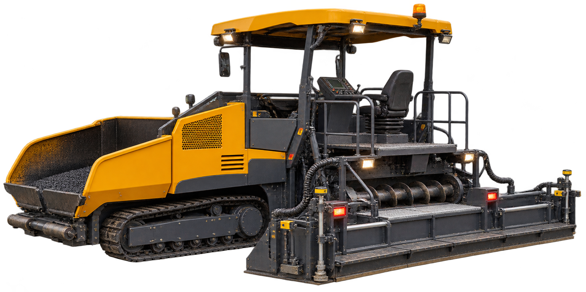
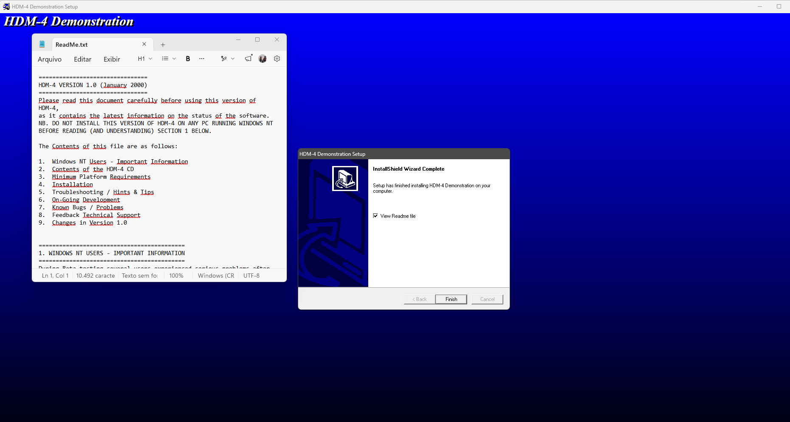
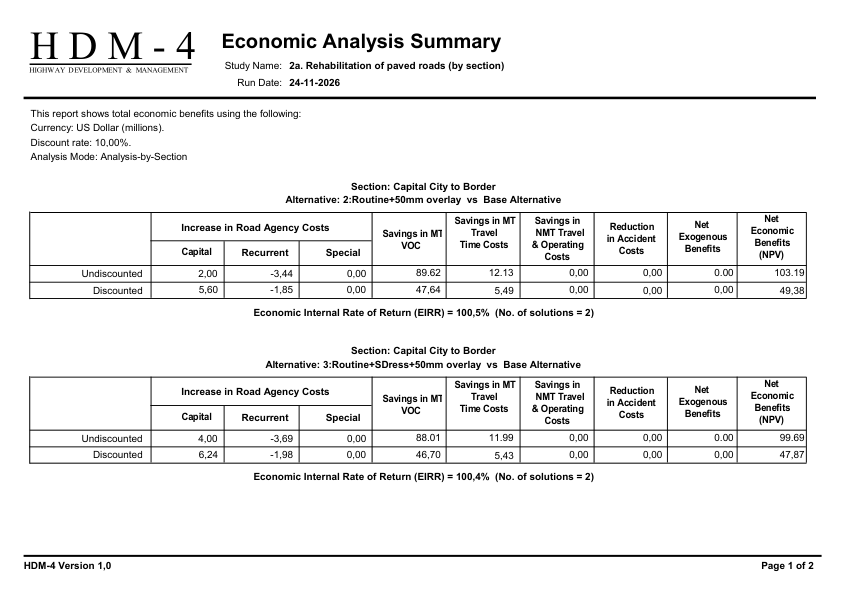
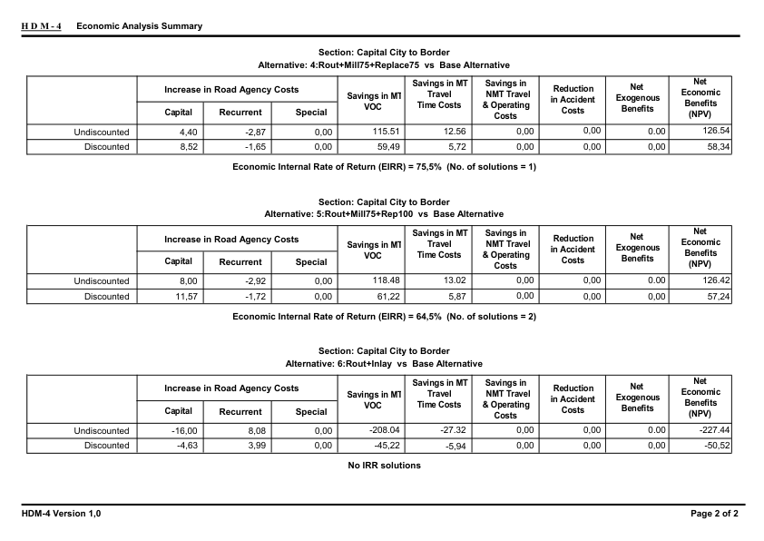

Sistema de Transporte Rodoviário · IME
HDM-4: da instalação à análise de alternativas de pavimento
Instalação do software e comparação econômica de intervenções em um estudo didático.

Pavimento em execuçãoLuiz Araujo · Doutorado em Engenharia de Transportes
Professor: Giuseppe Miceli Junior · Instituto Militar de Engenharia
01 · Objetivo da atividade
O primeiro passo foi instalar o programa
Foi instalada a versão de demonstração do HDM-4 no computador. Após a instalação, a interface e os estudos de exemplo foram verificados.
A versão identificada no arquivo de instruções é HDM-4 Demonstration 1.0.

02 · Evidência da instalação
Instalação e acesso ao sistema

03 · Escolha do caso
Foi adotado um estudo de demonstração
Como não havia dados medidos de um trecho próprio, foi utilizada a base fornecida com o programa, sob uma narrativa hipotética de obra rodoviária.
Estudo selecionado: 2a. Rehabilitation of paved roads (by section) — reabilitação de rodovias pavimentadas por trecho.
A narrativa fictícia não é um levantamento de campo nem altera a origem dos números calculados pelo software.

04 · Procedimento
Como a análise foi executada
Foi aberto o projeto de reabilitação por trecho.
Foram conferidos o trecho, a frota e as alternativas.
Foi executada a análise econômica.
Foi gerado o relatório de resultados.
O estudo usa a base do próprio HDM-4. A simulação representa uma situação de decisão sobre reabilitação, com dados de demonstração.
05 · Premissas observadas
O que entrou na comparação
Configuração do projeto
- Análise por trecho.
- Horizonte de 20 anos, a partir do ano 2000.
- Frota e rede viária de demonstração, com saída em dólares dos EUA.
- Trecho do relatório: da capital à fronteira (Capital City to Border).
Critério econômico
O relatório compara cada alternativa à solução de referência e apresenta o VPL — valor presente líquido.
Taxa de desconto informada: 10% ao ano. Valores exibidos em milhões de US$.
São parâmetros do caso de exemplo, não estimativas de orçamento para uma obra específica.
06 · Alternativas
Quais intervenções foram comparadas?
Recapeamento
Alternativa 2: manutenção rotineira + camada de 50 mm.
Alternativa 3: manutenção rotineira + tratamento superficial + camada de 50 mm.
Fresagem e recomposição
Alternativa 4: manutenção rotineira + fresagem de 75 mm + recomposição de 75 mm.
Alternativa 5: fresagem de 75 mm + recomposição de 100 mm.
Alternativa 6: manutenção rotineira + fresagem e recomposição do revestimento (inlay).
Nomes simplificados em português para apresentação oral; a identificação numérica segue o relatório gerado pelo HDM-4.
07 · Resultado comparado
VPL por alternativa
Benefício econômico líquido frente à alternativa de referência · milhões de US$ · desconto de 10%
A barra da alternativa 6 indica a magnitude do valor negativo; não usa o mesmo sentido de benefício das barras positivas.
08 · Relatório gerado · página 1
Resultados originais do HDM-4

09 · Relatório gerado · página 2
Alternativas 4, 5 e 6

10 · Leitura dos resultados
O que o resultado significa?
US$ 58,34 mi
Maior VPL: alternativa 4
Nas premissas do exemplo, a fresagem e recomposição de 75 mm apresentou o maior benefício líquido em comparação com a referência.
Segunda colocada: alternativa 5, US$ 57,24 milhões. A diferença de VPL entre as duas é de US$ 1,10 milhão.
Resultado desfavorável: alternativa 6, VPL de −US$ 50,52 milhões.
VPL positivo indica benefício líquido no modelo; a comparação só vale sob as premissas e dados utilizados.
11 · Conclusão e limites
O objetivo da disciplina foi atendido
O que foi demonstrado
- O HDM-4 foi instalado e iniciado.
- Foi aberto um estudo de reabilitação existente na versão de demonstração.
- Foi executada a análise e emitido o relatório econômico.
- A alternativa 4 apresentou o maior VPL no exemplo.
Como interpretar com cuidado
A base é didática e o trecho da narrativa é fictício. O programa apontou custos unitários iguais a zero para alguns veículos, o que limita a validade econômica dos resultados.
Portanto, não se trata de indicação para executar uma obra real. Para aplicação profissional seriam necessários dados de campo e custos calibrados.